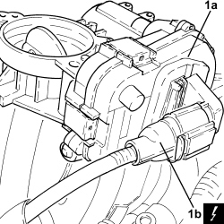

1060G50 THROTTLE BODY - R.R
- Path
- Procedures > 10 ENGINE > 1060 DIESEL INJECTION SYSTEM > 1060G DIESEL INJECTION PRESSURE PUMP ELECTRONIC CONTROL > 1060G50 THROTTLE BODY - R.R
- Kind
- repair procedure (removal / refitting; the operation number is the code)
- Applies to
- engines: 1.9 JTD 8v, 1.9 JTD 16v, 2.4 JTD 20v; all production periods
- Interactive page
- https://sloeber94.github.io/elrnDB-fCrm/en/#/194000340
Applies to: engines: 1.9 JTD 16v, 2.4 JTD 20v; all production periods
 Removing
Removing
 Refitting
Refitting- Make sure that the ignition key is in the OFF position, then disconnect the battery terminal (-).
Description | Connector | |
|---|---|---|
- | Battery |
1. Loosen the band and disconnect the oil vapour recovery pipe from the engine oil filler.
2. Undo the bolts securing the throttle body.

Applies to: engines: 1.9 JTD 16v, 2.4 JTD 20v; all production periods
1. Move the throttle body (1a) from its housing as necessary to disconnect the electrical connection (1b), then remove it.
Description | Connector | |
|---|---|---|
1b | Integrated throttle casing actuator |
- Remove the gasket.

Applies to: engines: 1.9 JTD 16v, 2.4 JTD 20v; all production periods
Refitting
Removing- Place the gasket back in its housing.
- Connect the electrical connection to the throttle body, then place it back in position.
1. Tighten the bolts securing the throttle body to the recommended torque.
Component | Fastening | dia | Value (daNm) | Validity |
|---|---|---|---|---|
Throttle body | Bolt | - | (chamber side) 2.5 | 1.9 JTD 16v 2.4 JTD 20v |
2. Connectt the oil vapour recovery pipe to the engine oil filler fitting and tighten the band.

Applies to: engines: 1.9 JTD 16v, 2.4 JTD 20v; all production periods
- Connect the negative battery terminal.
Applies to: engines: 1.9 JTD 8v; all production periods
Removing
Refitting
Topics linked from this page (2)
Topics that link to this page (11)
- B010 ENGINE DOES NOT START (UNDER ANY CIRCUMSTANCES)
- 1060GL CHECK OPERATION OF MAIN ENGINE CONTROL UNIT RELAY
- 1060GO INTEGRATED THROTTLE BODY OPERATION CHECK
- 1060F10 FUEL INJECTORS - R.R.
- 1060F20 PIPE FROM PRESSURE PUMP TO FUEL MANIFOLD - R.R.
- 1060F30 SINGLE FUEL MANIFOLD PIPE - R.R.
- 1060F36 PIPES (ALL) FROM FUEL MANIFOLD TO INJECTOR - R.R.
- 1060F51 FUEL HOSE FROM SINGLE MANIFOLD INJECTOR TO RETURN MANIFOLD - R.R.
- 1060G31 FUEL PRESSURE REGULATOR ON SINGLE MANIFOLD TO INJECTORS - R R
- 1072B10 INLET MANIFOLD - R + R AND REPLACE SEAL
- 1080C24 E.G.R. SYSTEM SOLENOID - R + R